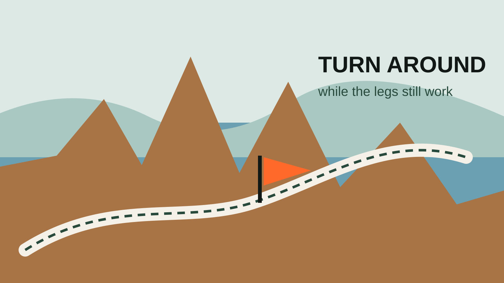

WEEKEND GUIDE
The no-overthinking Adirondacks family weekend
A practical two-day plan with scenery, food, easy wins and enough flexibility for kids.

LESS SCROLLING. MORE STORIES.
Real adventures for real families—road trips, trails, lakes, campfires, gear and the kind of days your kids actually remember.
MR ADVENTURE DAD
This is a field guide for parents who want to get the family out of the house and into something worth remembering—without turning every trip into a military operation.

Upstate New York, Adirondacks, Finger Lakes and road-trip worthy escapes.

Hiking, camping, paddling and four-season family adventure.

Useful gear picks, setup guides and things actually worth bringing.
START HERE
FIELD NOTES
A practical two-day plan with scenery, food, easy wins and enough flexibility for kids.

Water, views, food, backup plans and how to avoid spending half the day deciding what to do.

A simple playbook for timing, snacks, backups, weather and getting home before it all falls apart.
THE POINT OF ALL THIS
So go now. Take the scenic road. Get the ice cream. Stay for sunset. Let them get muddy. You can clean the car later.
FRESH FIELD PLANS

A high-payoff Lake Ontario hike with the safety and turnaround plan included.

Soft, hard, backpack—or skip it. Make the decision before marketing does.
TODAY'S FIELD PLANS

Walk first, eat on time, then choose one second act with current park logistics and backups.

Three route-based loadouts, a real fit check and an honest reason to keep the pack you own.
TODAY'S FIELD PLANS

Gorge first, overlook second, with the current beach closure treated like the real constraint it is.

Match rain protection to movement, exposure and the actual exit plan.
TODAY'S FIELD PLANS

One short trail, one wildlife stop, one lunch, and no need to conquer all nine miles.

Legal service, honest range, battery choices and the no-buy option.
THE USEFUL STUFF
These are practical categories to compare—not a reason to overpack. Check fit, specifications and current reviews before buying.
Paid links: As an Amazon Associate I earn from qualifying purchases. You pay no additional cost.
A comfortable pack keeps water, layers, snacks and small emergencies together.
See current options → COMPARE ON AMAZONEasy-to-carry bottles make regular water breaks less of a production.
See current options → COMPARE ON AMAZONKeep one organized kit where an adult can reach it quickly.
See current options → COMPARE ON AMAZONReserve phone power for navigation, tickets, weather and emergencies.
See current options →